Pupil’s Book — Healthy Lifestyle
Activities 1–8 and the Pronunciation box appear in their original order across pages 21–23. Listening notes are kept separate from the book’s wording.
1 a Listen and number.
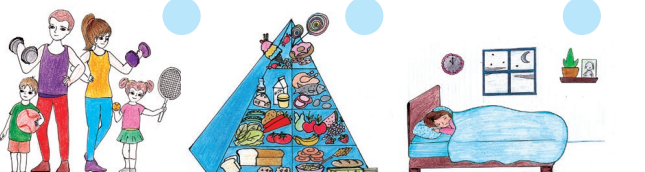
0 of 3 answered.
b Listen again and choose a, b or c.
- 1
Living a healthy lifestyle is ……
- 2
To be healthy you should ……
- 3
Relaxing can help you ……
0 of 3 answered.
The recording for activity 1 b was not supplied, so the three items are kept exactly as printed and are not scored. No answer is invented.
2 Ask and answer.
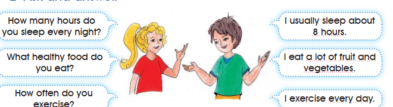
Question
How many hours do you sleep every night?
What healthy food do you eat?
How often do you exercise?
Answer
I usually sleep about 8 hours.
I eat a lot of fruit and vegetables.
I exercise every day.
Activity 2 is a speaking task. The page prints no answer key and none is invented here.
Pronunciation.
/əʊ/
- so
- know
- no
/ɔː/
- saw
- more
- for
1 a Listen and number and 1 b Listen again and choose a, b or c are both decided by the recording. The recording was not supplied, so this page keeps the three pictures, the three number circles, the three questions and every printed option, and provides no answer key.
2 Ask and answer and Pronunciation are speaking tasks; the page prints no key for them.
Nothing on this page is marked correct or incorrect for these listening items. Typing a number or choosing an option only stores your own attempt on this browser.
Open the source page · Pupil’s Book · p. 21
This is the original supplied image, shown without redrawing or generation.
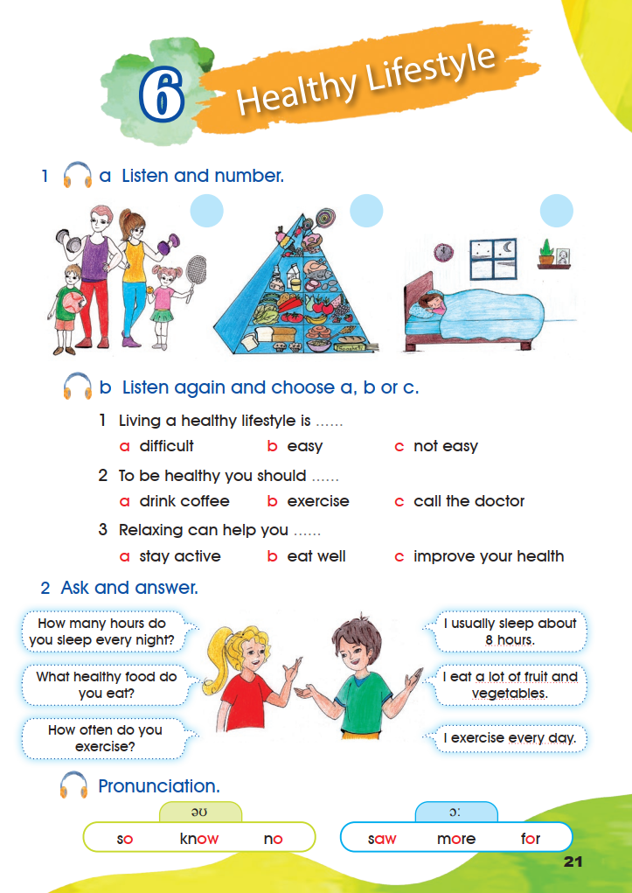
3 Read and practice.
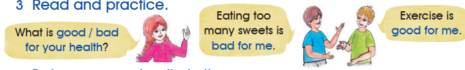
What is good / bad for your health?
Eating too many sweets is bad for me.
Exercise is good for me.
Activity 3 is a speaking task. The page prints no answer key.
4 Before you read, write in the spaces.
- fruit and vegetables
- grains
- dairy
- Fish and meat
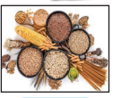
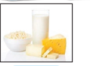
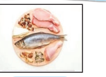
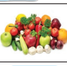
0 of 4 filled.
The word bank is printed in the order “fruit and vegetables – grains – dairy – Fish and meat”. The four photographs are printed under the bank in the order shown here; the words are not printed under them.
5 Read the text and do the tasks below.
My Plate
Healthy eating could be easy and fun. When you eat the right food, you will feel good and have more energy. There are four main groups of food you need every day. Dairy makes your teeth and bones strong. Meat and fish are good for you. They give you energy to work and play. Grains should be in every meal. When you eat wheat, cereal or rice, you will have a healthy heart. Fruit and vegetables are the most important part of a healthy diet. They are full of vitamins. You also need fat. Healthy food is delicious.
a Write true (T) or false (F).
- 1
It is boring to be healthy.
- 2
The right food makes you happy and strong.
- 3
Meat and fish give you energy to work and play.
- 4
Fruit and vegetables don’t have vitamins.
0 of 4 answered.
b Choose a, b or c.
- 1
The groups of food are ……
- 2
To have strong teeth and bones you need to eat ……
- 3
Wheat, cereal and rice are ……
0 of 3 answered.
4 Before you read: 1 grains · 2 dairy · 3 Fish and meat · 4 fruit and vegetables.
5 a Write true (T) or false (F): 1 False · 2 True · 3 True · 4 False.
5 b Choose a, b or c: 1 b four · 2 a dairy · 3 c grains.
The four food words are read from the printed photographs under the printed word bank; the true/false and choice answers are settled by the printed “My Plate” text.
Open the source page · Pupil’s Book · p. 22
This is the original supplied image, shown without redrawing or generation.
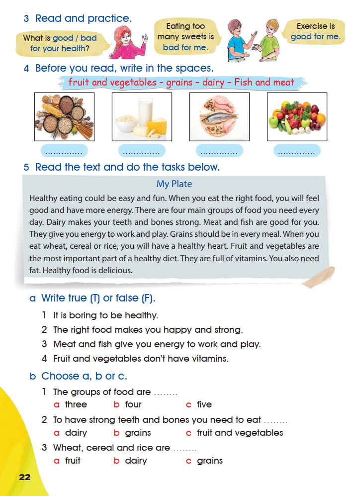
Let’s Learn
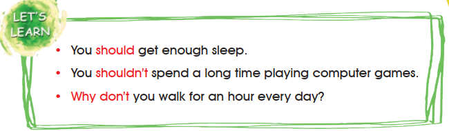
- You should get enough sleep.
- You shouldn’t spend a long time playing computer games.
- Why don’t you walk for an hour every day?
6 Fill in the spaces with.
- should
- shouldn’t
- why don’t you
- 1
Everyone …………… drink lots of water every day.
- 2
…………… get some fresh air?
- 3
You …………… be active during the day.
- 4
You …………… eat many sweets.
0 of 4 answered.
7 Write advice to your friend on how to live a healthy life.
8 Use the table below and write down what you eat.
| Breakfast | |
|---|---|
| Lunch | |
| Dinner |
6 Fill in the spaces: 1 should · 2 Why don’t you · 3 should · 4 shouldn’t.
7 Write advice: this is personal writing. Model advice: You should get enough sleep. · You shouldn’t eat many sweets. · Why don’t you walk for an hour every day?
8 What you eat: this is a personal record. The page prints no key for activities 7 and 8.
The answers for activity 6 are settled by the printed Let’s Learn box and by the meaning of each sentence. The word bank prints “why don’t you” in lower case; the sentence in item 2 begins with a capital letter, as printed.
Open the source page · Pupil’s Book · p. 23
This is the original supplied image, shown without redrawing or generation.
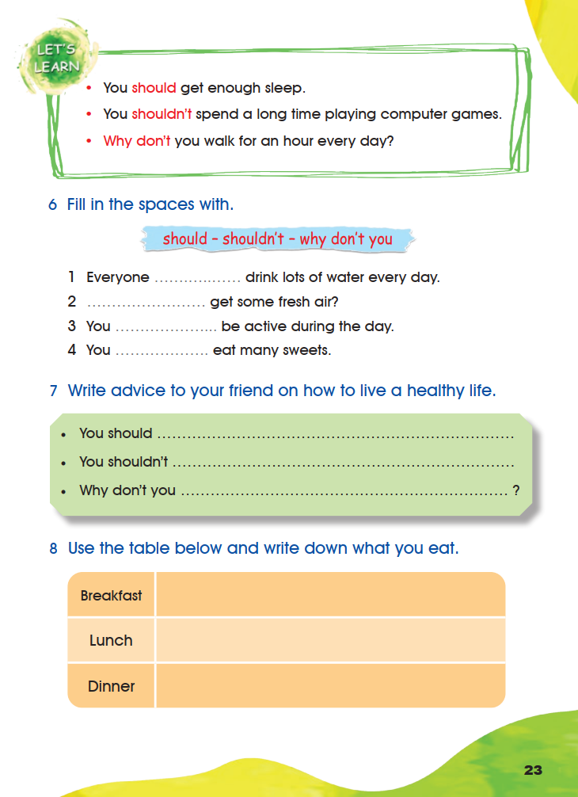